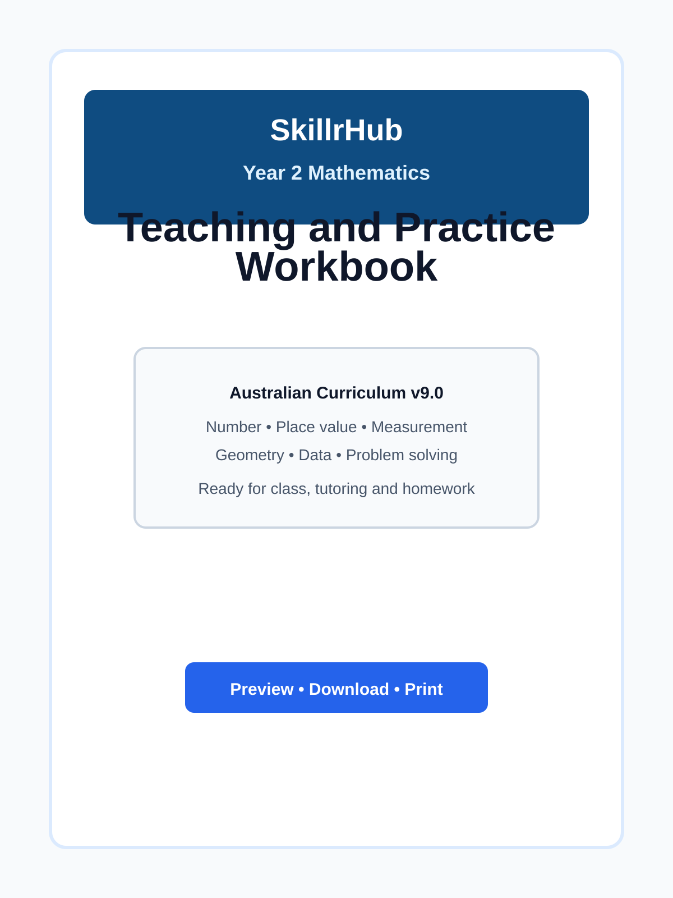

Maths
Year 2 Maths Worksheets and Topic Guides
Browse Year 2 Maths topic guides, teaching ideas and printable resources covering number, measurement, geometry and data.
View Year 2 MathsThese worksheets support steady progress in maths and science with clear, age-appropriate activities for class or home learning.
Use this page as a bridge from early basics to more structured work.
Featured resource
These materials are designed to help learners move from early number concepts into more structured Year 2 practice with confidence. The collection includes printable worksheets, topic guides and revision-friendly activities that fit neatly into lessons, homework and tutoring sessions.

These Year 2 resources support steady growth by building on Foundation and Year 1 concepts with a wider range of maths and science topics. They are especially helpful for children who are ready to practise place value, measurement, simple multiplication and early scientific observation with more confidence.
Explore free printable Year 2 worksheets and topic guides for Maths and Science. The pages are designed to support classroom learning, home practice and skill development through clear, structured activities that feel manageable and purposeful.
If you need worksheets for a particular topic, please contact us at skillrhublearning@gmail.com. We welcome suggestions and use this feedback to guide future additions across both maths and science.
If a child needs a refresher first, revisit the Foundation worksheets for counting, sorting and simple science, or the Year 1 worksheets for number patterns and measurement.
Maths
Browse Year 2 Maths topic guides, teaching ideas and printable resources covering number, measurement, geometry and data.
View Year 2 MathsScience
Browse Year 2 Science topic guides, teaching ideas and printable resources covering living things, weather, forces and inquiry skills.
View Year 2 ScienceFor the best learning experience, encourage children to work in a calm, distraction-free environment and complete one worksheet at a time.
If you need help or cannot find a worksheet for a specific topic, please contact us at skillrhublearning@gmail.com.
This site may use analytics and advertising to support free resources. Please review our privacy policy for details on cookies, analytics and advertising.